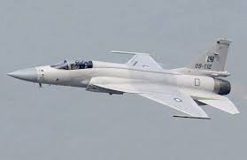
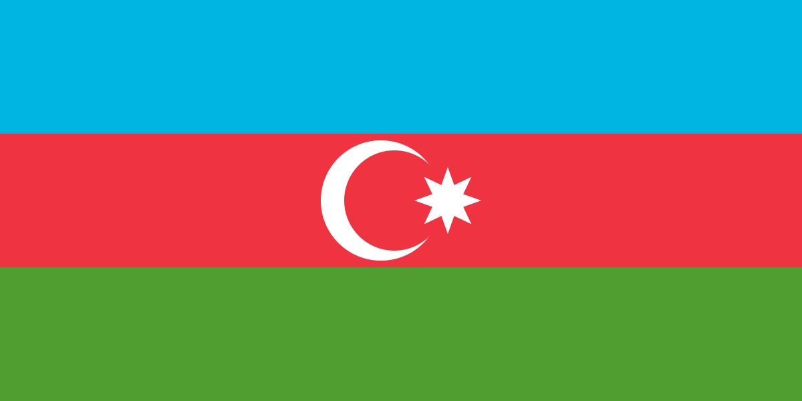

An important turning point in the two countries' defense cooperation will be reached when Pakistan delivers its first batch of JF-17 Thunder fighter jets to Azerbaijan. This comes after a significant contract was inked in February 2024, whereby the Pakistan Aeronautical Complex was awarded a $1.6 billion contract by Azerbaijan's Ministry of Defense to purchase these cutting-edge fighter fighters. Along with the aircraft delivery the agreement covers ammunition supply and pilot training for Azerbaijan.
Azerbaijan's air force capabilities have been significantly enhanced by the JF-17 Thunder, a joint effort between China's Chengdu Aircraft Industry Group and Pakistan's Aeronautical Complex. With its sophisticated radar and electronic defense systems the JF-17C Block III model can carry up to eight different kinds of missiles. This purchase is a component of Azerbaijan's larger military modernization plan, especially in light of its role in the Nagorno-Karabakh war.
With talks for cooperative defense production under way Azerbaijan and Pakistan defense collaboration is growing beyond the JF-17 agreement. In order to develop cooperative military manufacturing capabilities both nations have made a strong commitment to strengthening their strategic defense connections. When an Azerbaijani delegation travels to Pakistan in April to sign agreements worth $2 billion this partnership is anticipated to be a major topic of discussion. The collaborative production project could greatly increase both countries export capacities by utilizing Azerbaijan's expanding military industry potential and Pakistan's established defense industry.
Azerbaijan is set to receive its first batch of JF-17 Thunder Block-III fighter jets from Pakistan, an important step between two nations defense cooperation. This comes through Pakistan's Aeronautical Complex and Ministry of Defense of Azerbaijan signed a big deal in February 2024 to buy these fighter jets worth $1.6 billion. Along with the aircraft delivery the deal also covers ammunition supply and pilot training for Azerbaijan.
Azerbaijan air force capabilities have been significantly enhanced by the JF-17 Thunder, a joint effort between Chinese Chengdu Aircraft Industry Group and Pakistan's Aeronautical Complex. With its sophisticated radar and electronic defense systems the JF-17C Block III aircraft can carry up to eight different kinds of missiles. This purchase is a component of Azerbaijan's larger military modernization plan especially in light of its role in the Nagorno-Karabakh war.

Azerbaijan and Pakistan are extending their defense cooperation beyond the JF-17 agreement to include cooperative defense manufacture. In order to develop cooperative military manufacturing capabilities both nations have made a strong commitment to strengthening their strategic defense connections. By utilizing Azerbaijan's developing military industry and Pakistan's established defense industry this project has the potential to greatly increase both countries export capacities. During President Ilham Aliyev trip to Pakistan in April agreements totaling $2 billion are expected to be signed strengthening their collaboration.